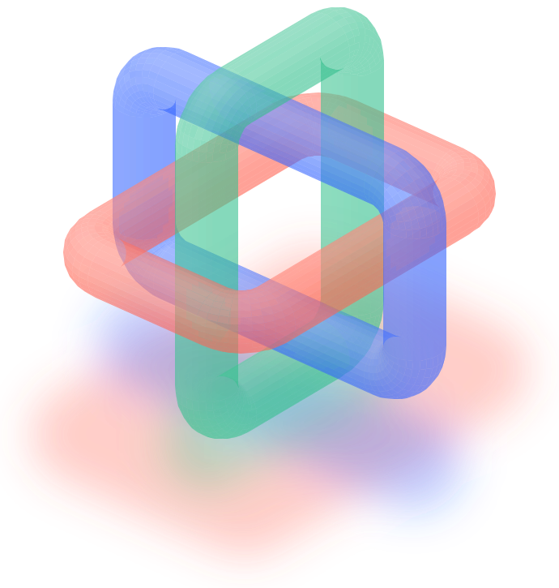

Compact navigation tables for the inverse BWT: early findings¶
Most of the inverse BWT's navigation table follows simple patterns: what a census of real blocks found, and what comes next.

This research began with a simple question:
Can succinct data structures make my bzip2 decoder faster?
The answer so far is that the large table the decoder uses to reconstruct text stores more than it needs to, and much of what it stores follows simple patterns.
This is no longer only theory: a census of the benchmark corpus's actual data shows those patterns.
What follows starts from the beginning and assumes no background in compressed indexes.
1. The decoder follows a chain of pointers¶
When bzip2 compresses some text, it performs the Burrows–Wheeler Transform (BWT).
The BWT rearranges the characters in a way that helps compression. But recovering the original text requires following a particular sequence of positions.
Imagine an enormous collection of numbered cards.
Each card tells you which card to visit next.
A miniature pointer chain
- Card 03
- Card 15
- Card 20
- Card 36
- Card 41
- Card 52
- Card 64
Path: 0 → 3 → 6 → 4 → 1 → 5 → 2
mibz2's decoder uses a table called the T-vector, which is essentially a much larger, more sophisticated collection of such cards.
For each position, it stores:
- Where to go next.
- The character associated with that position.
- A marker used by mibz2's cooperative traversal algorithm.
At maximum bzip2 block size, this table occupies approximately 3.6 MB.
mibz2's 32-lane implementation already tackles one major cost: instead of following one chain and repeatedly waiting for memory, it follows many independent chains at once.
That's memory-level parallelism (MLP).
So far, so good.
But then we asked a different question.
Why do we need four bytes for every card?
2. The cards aren't arbitrary¶
Take these two sequences of destinations:
Two groups of eight pointers
For Group A, storing eight values individually is reasonable.
But Group B?
You only need to remember:
Start at 427 and add the position within the group.
One starting number replaces eight separate numbers.
The permutation mibz2's inverse BWT decoder follows, called Ψ (psi), isn't a completely arbitrary permutation.
Because of how the BWT is constructed, it consists of increasing sequences of positions.
That means consecutive entries within a particular character group always point to increasing positions.
They won't necessarily be consecutive like Group B—but they're at least sorted.
And that gives us opportunities to compress them.
This is where succinct data structures entered the picture.
3. Succinct structures are about storing the pattern, not the individual facts¶
In ordinary programming, we tend to store arrays of values directly.
A succinct representation asks:
Can I describe the arrangement of these values more economically and reconstruct any particular value when needed?
For example, rather than storing:
1000, 1002, 1005, 1008, 1010
you might store:
base = 1000
and:
offsets = 0, 2, 5, 8, 10
The offsets are much smaller than the absolute values, so they may require fewer bits.
This is called frame-of-reference encoding, or FOR.
Another technique, Elias–Fano, is especially suited to sorted integer sequences. It separates the higher and lower parts of each number and compresses the high parts using the sequence's monotonicity.
Neither is magic; you save memory at the cost of some work to recover an individual value.
And that creates our main tension:
A more compact table is useful only if reconstructing its pointers doesn't make the decoder slower than before.
4. What the census found¶
Initially, we had no idea how well these representations would fit real BWT data.
Perhaps the values were increasing but widely scattered, making compression awkward.
So we wrote a census program to inspect them.
It found more structure than the theory alone guarantees.
What our census found in the benchmark corpus
The important observation is that more than three-quarters of the measured rows may be represented using a simple arithmetic rule.
That is much better than we could have assumed from the mathematics alone.
It's the difference between saying:
This encoding should work in principle.
And:
We've examined the actual pointers, and most of them exhibit precisely the structure this encoding is designed to exploit.
It does not yet mean the decoder will be faster. But it establishes that there is something real to exploit.
5. Why the CPU's cache lines became central¶
Now we reach the hardware connection.
Modern CPUs don't fetch arbitrary isolated bytes from main memory one at a time. They work with cache lines, commonly 64 bytes.
Imagine a cache line as a little tray of data.
If the next pointer lives in that tray, the processor can fetch the tray and extract what it needs.
The first design asks:
What if we could store 32 pointers in exactly one 64-byte cache line?
The fixed-cache-line proposal
mibz2's current representation uses four bytes per pointer.
So the new design could halve the navigation table's storage, before exception overhead.
And crucially, the record can be found immediately from the current row number.
No searching for where the record was stored.
This is very important because mibz2's greatest strength is how quickly it can issue independent memory requests.
A compact representation that introduces multiple dependent searches could destroy that advantage.
The fixed-size record tries to avoid precisely that.
6. A second design: a two-tier layout¶
If 77.6% of rows belong to simple consecutive groups, why devote an entire 64-byte record to each of those groups?
Most of the record would contain information we don't actually need.
So we proposed a two-tier layout.
Two-tier Ψ navigation
It is a compromise.
For the common case, the small directory entry already gives us the next pointer.
For the less common case, we fetch extra information.
Because the directory is tiny compared with the current T-vector, it may fit much more comfortably in cache.
And because we don't allocate a full 64-byte record for the simple groups, the storage could become much smaller.
Our initial calculation suggested something in the neighbourhood of 5.6 bits per row, before additional exceptions and bookkeeping.
That's not a measured final footprint. It's an optimistic model built from the reported distribution.
The attraction is real, but so is the risk: whenever we need the second record, we introduce another memory dependency.
7. Why a smaller table could make mibz2 faster¶
Suppose mibz2 is decoding one full-sized bzip2 block.
Its T-vector for that block is 3.6 MB.
But mibz2 can work on multiple blocks concurrently.
With several full-size blocks in flight, their tables compete for space in the CPU's shared cache.
Eight simultaneous full-block tables
Earlier measurements on a 10-core workstation already show evidence of a shared-cache residency threshold.
When the live tables become too large, the processor must fetch more data from slower parts of the memory hierarchy.
Smaller tables would let more of them stay resident in the same cache capacity.
We might see fewer expensive memory misses.
Even if each individual pointer is slightly more expensive to decode, the overall decoder could become faster.
This is the same kind of trade-off Julian Seward studied in 2001.
But mibz2 adds modern multicore concurrency and 32-lane traversal.
The goal is not to have the smallest possible table. It's to make the whole machine finish decoding sooner.
8. Open questions¶
There are three substantial unanswered questions.
First, how much does decoding a compressed pointer cost? With the current T-vector, the CPU loads a 32-bit value and extracts the next row. With a compressed record, it may need shifts, masks, a format test and sometimes an additional memory access. Even a small amount of extra work matters when repeated millions of times.
Second, how expensive is construction? The compressed table must be built from the BWT before it can be traversed. A representation that makes traversal faster but takes twice as long to build might lose overall.
Third, does the 77.6% translation property hold broadly? We know it appears in our benchmark corpus. We don't yet know how stable it is across different types of compressed data, and it's not a universal mathematical guarantee.
We have enough evidence to investigate these questions seriously, but not enough to claim a faster decoder.
9. What is known and what is not¶
| Finding | Status |
|---|---|
| Ψ has increasing sequences that can be compressed | Mathematically established |
| Actual benchmark data contains abundant consecutive-position groups | Measured by our census |
| Fixed 64-byte records can represent the overwhelming majority of measured groups | Strongly supported by the census; complete encoding still needs validation |
| A two-tier directory could shrink storage further | New design hypothesis |
| Reduced working sets can improve cache residency | Supported by mibz2's existing performance measurements |
| Either compressed design will beat the current decoder | Unknown |
And the most important distinction of all:
We've found evidence that the data is compressible in a form suited to fast navigation. We haven't yet proved that navigating the compressed representation is faster.
These are separate claims.
10. The underlying idea¶
The underlying point is that the T-vector—the enormous table of navigation pointers—isn't fundamentally necessary in its current form.
It's a convenient way to store answers to questions.
The BWT already contains the information from which those answers can be derived.
Succinct data structures teach us to exploit that fact.
But our work adds an interesting twist:
Rather than pursuing the absolutely smallest possible encoding, we're looking for a carefully chosen amount of redundancy that allows the CPU to recover answers quickly.
In other words, sometimes storing a little unnecessary information makes the whole algorithm faster.
That's what makes the problem so subtle.
A theoretician might ask:
How close can we get to the minimum number of bits?
A systems programmer might ask:
How few instructions can we execute per pointer?
Our research asks:
How should we arrange the information so that the CPU can follow millions of pointers with as little waiting as possible?
That brings information theory, succinct data structures, cache architecture and instruction scheduling together in one problem.
Where we've arrived¶
Our research journey
What comes next¶
The census shows there is structure to exploit. It says nothing yet about speed, and the next steps are the measurements that will. They run in order, one controlled comparison at a time.
The roadmap, in order
The first of them has now run. Building the table in one pass, rather than copying first and scattering after, made the cooperative build 1.31× faster on the 10-core workstation. That raises the bar for every compact design: each must now beat the fused 32-bit build and its walk, not the old two-pass one.
It also sharpens the question. The most interesting version of a compact table is not one made by compressing a finished T-vector, but one built straight from the BWT, record by record, so the full 32-bit table is never written at all. Writing fewer bytes need not mean doing less work, so that too will be measured before anything is built on it.
Three table designs are kept as candidates. None is built yet, and they will compete on measured construction and navigation cost, not on size alone:
- 24-bit direct links: the simple reference, a quarter smaller than today's table.
- Fixed 64-byte records: 32 pointers to a cache line, 16.16 bits a row on the corpus.
- Two-tier descriptors: 5.70 bits a row on the corpus, but 12–36% of steps need a second, dependent load, and on less regular inputs the design loses its advantage.
This post will be updated as the results come in. The work is tracked on #81 and #79.
The bottom line¶
We've moved from:
"Maybe succinct data structures could save us some memory."
To:
"We have evidence that most of the permutation can be represented by simple rules, and we have several concrete ways of exploiting those rules while protecting the memory-level parallelism that makes mibz2 fast."
We now have a real engineering question to settle: whether those smaller representations can make the CPU finish its work faster.
The working hypothesis, in one line:
A decoder may get faster not by following its pointers more efficiently, but by not storing most of them individually.
Since this was written
The census has since been refined and the designs' sizes counted exactly. On the corpus's 233 full blocks:
- 77.39% of rows are in groups that are one run, ranging from 63.7% to 88.0% per block;
- the fixed 64-byte records come to 16.16 bits a row;
- the two-tier design comes to 5.70 bits a row, where 12–36% of steps need its second lookup.
On other inputs, such as random or already-compressed data, runs are rare. There the
two-tier design is larger than the fixed records, while the fixed records still fit at
about 16.3 bits a row. The details, sources and the full discussion are in the research
journal (docs/journal/2026-10-29-succinct-review.md, #94)
and on #79.